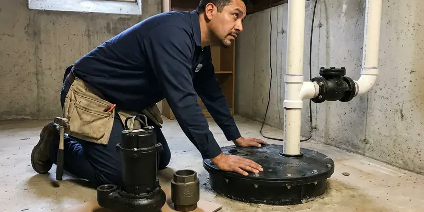

Tankless Water Heater Installation in Eagle Mountain, UT
Hot water quits after one shower? BPK Plumbing installs tankless heaters in Eagle Mountain, UT sized for how your house actually uses water.
- Most Installs in a Day
- Licensed Installers
- Condensing Units
- Isolation Valves Included

Book a Tankless Estimate in Eagle Mountain, UT
The walk-through usually runs under an hour. No obligation to schedule.
Tankless Installation in Eagle Mountain, UT From BPK Plumbing
BPK Plumbing treats mineral scale as the main threat to a tankless unit, since it coats the heat exchanger and cuts efficiency fast. Water softeners are a common fixture in Utah homes, and many newer houses are built with a softener loop already in place. Every install gets service valves for flushing. A scale-inhibitor cartridge or a softener protects the warranty, because many makers deny heat exchanger claims for scale damage.
Work we handle every week:
- Recirculation pump setups for distant fixtures
- Electric whole-home and point-of-use tankless heaters
- Gas tankless units up to 199,000 BTU

Additional Plumbing Installation Services in Eagle Mountain, UT
We install water heaters, pumps, lines, and fixtures across Eagle Mountain, UT with careful, permitted work that passes inspection the first time.


Customers
Why Choose BPK Plumbing for Tankless Water Heater Installation in Eagle Mountain, UT?
Water hardness and incoming water temperature both change how a tankless unit performs. Water softeners are a common fixture in Utah homes, and many newer houses are built with a softener loop already in place. Colder water means a bigger unit. We take the incoming temperature during the estimate and size for the coldest time of year, so the unit keeps up even when the water coming in is at its coldest.
- Gas Done Right, Gas lines are sized by load and length then pressure test it.
- Wall-Mounted, A unit the size of a suitcase frees up the tank's floor space.
- Lower Gas Use, High-efficiency units turn more of the gas into hot water.
Citywide Coverage
Homes all over Eagle Mountain have had tankless units installed by us, from older ranch houses with garage tanks to newer homes with attic heaters. Each one gets a vent and gas route planned around its own layout before we quote a price, because two houses on the same street can need very different routes. No two jobs match.
Experienced Team
Each BPK Plumbing technician has worked through the details of tankless installs, from flame sensors to condensate neutralizers. Tankless units carry far more electronics than tanks, and a tech who reads the error history and flow sensor data can find the fault in minutes, not guess with parts. That saves you money.
Safety-First Approach
Our crews follow Utah plumbing and fuel gas code on every job, plus the maker's installation manual. Code sets the minimum, but manufacturers add their own rules on vent length, elbow count and condensate disposal, and following both keeps the system safe and the warranty in force. Both matter.
Trusted Certified Eagle Mountain Plumbing Services Professionals
At BPK Plumbing, we take pride in licensed, certified plumbing services throughout Eagle Mountain, UT. Credentials matter in this trade. Our plumbers hold recognized industry credentials, and they follow strict safety and quality rules on every repair, installation and maintenance call we run.
Call Us Now PHCC Plumbing Contractor Recognition
PHCC Plumbing Contractor Recognition Better Business Bureau (BBB) Accreditation
Better Business Bureau (BBB) Accreditation Angi Certified Pro
Angi Certified Pro ISO 9001 Quality Management Certification
ISO 9001 Quality Management CertificationTankless Heater Installation in Eagle Mountain, UT
Rinnai, Navien and Noritz Installation in Eagle Mountain, UT
We install Rinnai, Navien, Noritz and Rheem in Eagle Mountain, UT homes all year long. Rinnai has a wide model range and good parts support, Navien builds in recirculation on many models, Noritz makes compact condensing units that fit tight spaces, and Rheem pairs well with their tank lineup. Each warranty differs. We walk you through them.

Rinnai Tankless Water Heater Installation in Eagle Mountain, UT
Rinnai has been making tankless heaters for decades, and parts are easy to get. We install both condensing and non-condensing Rinnai models, and the right one depends on where the vent can go and how much you want to spend up front. Non-condensing units vent in stainless. Condensing units vent in PVC and drain condensate.
Tankless vs Tank Cost Comparison in Eagle Mountain, UT
Upfront, a tankless install in Eagle Mountain, UT costs more than a standard tank because of the unit price, the gas line upgrade and the venting changes. The gap shrinks over time. Less standby loss, a life of up to 20 years versus roughly 10 for a tank, and replaceable parts all count over the years. Ask for both prices.
Upgrading from Tank to Tankless in Eagle Mountain, UT
Switching from a tank takes more than unbolting one and hanging the other. A 40-gallon tank burns about 40,000 BTU, but a whole-home tankless unit may need 150,000 to 199,000, so the meter line nearly always gets bigger. The vent changes as well. Both are on the estimate.
Hard Water Protection for Tankless Units in Eagle Mountain, UT
Calcium scale is what kills most tankless units early. Water softeners are a common fixture in Utah homes, and many newer houses are built with a softener loop already in place. Scale coats the heat exchanger, cuts efficiency and triggers error codes, and left alone it can crack the exchanger and end the warranty claim before it starts. Flush it yearly. Service valves make it easy.
Cost-Effective Tankless Conversions in Eagle Mountain, UT
A tankless conversion in Eagle Mountain, UT costs more than a tank swap, mostly because of the gas line upgrade, the new venting and the unit price itself. You earn some of it back each month. With no standby loss and a lifespan that can reach 20 years, many homeowners see the difference on the gas bill within the first few winters. We give you real numbers.
Propane Tankless Water Heater Installation in Eagle Mountain
Propane homes in Eagle Mountain can run tankless units too, using a model built or converted for propane. Propane runs at a higher pressure than natural gas, so the regulator, gas line sizing and the unit's gas valve all have to match, and the propane supplier may need to change the regulator at the tank. Tank size matters too.

Residential Tankless System Upgrades in Eagle Mountain
Upgrading from a tank in Eagle Mountain begins with your current setup: tank size, vent type, gas line size and where the unit sits. Sometimes the old flue can be capped and the new unit vented straight out a side wall with PVC, which simplifies the job and frees up the old chimney chase. Some homes need more vent pipe. The quote says which.
Tankless Installers Near You in Eagle Mountain, UT
Being close by lets us get to small problems fast. An error code on a cold morning, a tankless unit that will not light or a vent that came loose in the wind are calls we can often reach the same day. The trucks carry flame sensors and igniters.
Thinking about a conversion? Book a free estimate with our local crew. We look at your current heater, check the gas meter and line size, find the best vent route and then put a written price in your hands before we leave the house. No guesswork on cost. Most visits take under an hour.
BPK Plumbing at a Glance
- Licensed and insured plumbers serving Eagle Mountain, UT
- 24/7 emergency service with same-day scheduling
- Clear written estimates, no hidden fees
- 4.8-star rated by 470+ Utah customers
Eagle Mountain Map
Eagle Mountain Information
- Population
- 56,932
- Area codes
- Local
- Service area
- Eagle Mountain and towns within a 40 mile drive
- Nearby
- Saratoga Springs, Lehi, Herriman, Draper
A tankless heater fires only when a tap opens, so there is no tank losing heat all night in your Eagle Mountain, UT home.
Expert Services
Call BPK Plumbing for honest, reliable plumbing from people who know the trade in Eagle Mountain, UT.
Our Specialized Plumbing Services in Eagle Mountain, UT
At BPK Plumbing, you get every kind of plumbing service from one company across Eagle Mountain, UT. We go from leak detection all the way to full system installations, for homes and commercial buildings, and we do it quickly at a fair price. Explore our core services below:


What to Expect From a Tankless Conversion in Eagle Mountain, UT
Three steps: size it, install it, test it.
In-Home Estimate
Call (385) 543-4073 to set up an estimate. We size the unit and price the gas and venting in writing.
Install and Upgrade
The heater, gas upgrade and new vent all go in. Most jobs finish in a day.
Test and Show You
After testing gas and water, we go over the controls with you. We explain the annual flush too.
Frequently Asked Questions About Tankless Water Heater Installation in Eagle Mountain
Tankless installs in Eagle Mountain tend to fall between $3,000 and $6,000. Gas or electric, the size of the unit, the gas line upgrade and the vent route are what move a job from the low end to the high end of that range. We price it after a visit.
Usually a plumbing permit, and often a gas or electrical permit. BPK Plumbing files the paperwork and books the inspector, so you do not have to.
They are, in almost any climate. An arid climate with hot summers, cold winters and big daily temperature swings puts steady stress on plumbing across Utah. Because they only heat water on demand, they avoid the standby heat loss that a tank has all day and all night, which adds up even in milder months. Cold water just calls for more burner.
Navien, Rinnai, Rheem, Takagi and Noritz are all brands we install. We help you compare features, efficiency and warranty terms before you pick one.
Rinnai, Navien, Noritz and Rheem, for the most part. Each has strengths, and we suggest the one that fits your venting and budget.
Usually some, because there is no standby heat loss. How much depends on your household and usage.
Temperature swings, error codes, reduced flow and odd noises. Scale is often the cause, and a flush usually fixes it.
Yes. In Eagle Mountain, most tankless installs need a plumbing permit, and gas work may need its own. The permits and inspection are handled by us.
What Our Customers Say About Our Plumbing Experts

Nathan E.
Our tankless heater kept throwing an error code and shutting off mid shower. The tech flushed the heat exchanger, which was full of scale, and replaced a bad flow sensor. Hot water has been steady for half a year now.
Water Heater Repair · South Jordan, UT
Angela D.
Our sump pump quit during a storm and the water was an inch from the basement carpet. BPK Plumbing put in a new pump with a battery backup that same evening. We have had two heavy rains since. It kicked on both times.
Sump Pump · Eagle Mountain, UT
Jessica T.
We were adding a gas range in a kitchen remodel and needed a new line run from the meter. The plumber pulled the permit, ran the pipe through the crawl space, and had it inspected and approved within the week.
Gas Line Repair · Draper, UTPatricia H.
We had a slab leak that two other companies could not find. BPK Plumbing located it in under an hour with a listening device. They rerouted the line through the attic instead of breaking up the floor, so we kept our kitchen tile.
Slab Leak Repair · Herriman, UT
James P.
Our restaurant had a slow leak at the hand sink that was rotting the cabinet base. BPK Plumbing came in at six in the morning before prep, replaced the trap and both supply lines, and was packed up before my first cook clocked in.
Commercial Plumbing · Orem, UTDiane F.
My kitchen faucet had dripped for months and I finally got tired of hearing it at night. BPK Plumbing came out the next morning, replaced the cartridge and the O rings, and tightened a loose base that was letting water under the sink.
Faucet Repair · Draper, UT